Tutorial 05: Particles
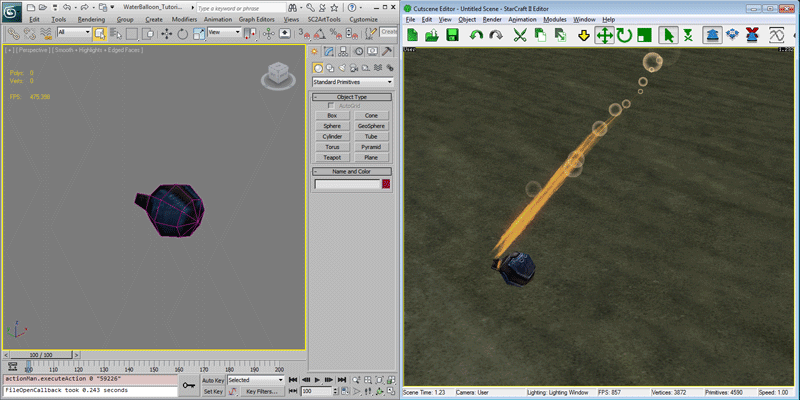StarCraft II has a fully featured particle effect pipeline that allows for all the spell effects seen in the game and added details like fog, dust, and weather. These 'Element Systems' are special entities that are comprised of many smaller simulating parts. This tutorial introduces Particles and Ribbon effects in the context of fleshing out a projectile for the Waterbat, as a way to get you started using the StarCraft II Effect pipeline.
Getting Started
-
Open 'WaterBalloon_Tutorial01_Model.max'. You should see a blue metal sphere with a little stem. This is the model we will be practicing particle effects on. While not immediately relevant, this model is animated, and has the animation, 'Stand' defined.
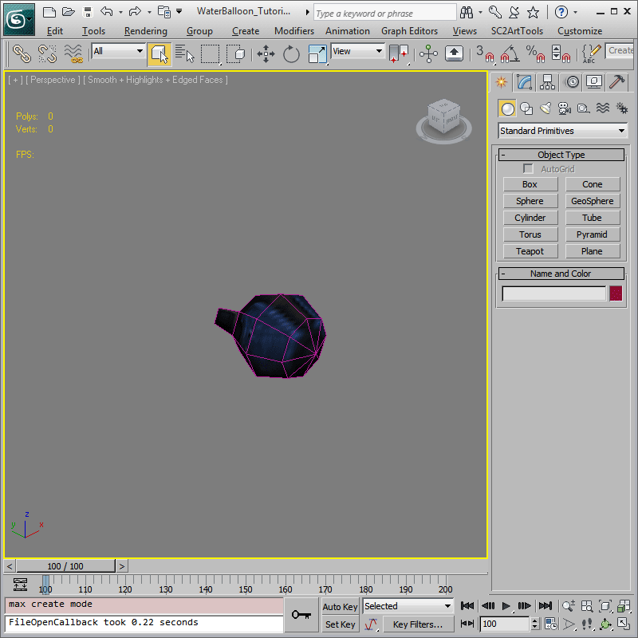
Particle Creation
-
The StarCraft II Art Tools define several Nodes for 3ds Max. Where applicable, they show up in the appropriate 'Create Panel' type. For this tutorial, switch to 'Particle Systems'.
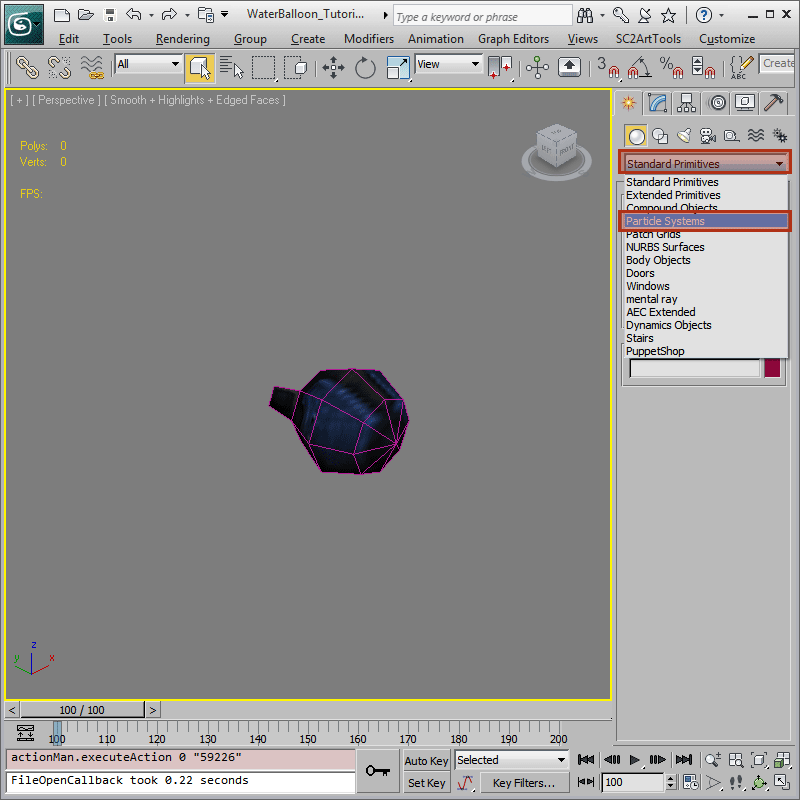 -
From the 'Object Type' rollout select 'SC2Particles' then click in the viewport to place the particle system. For now, don't worry about the settings.
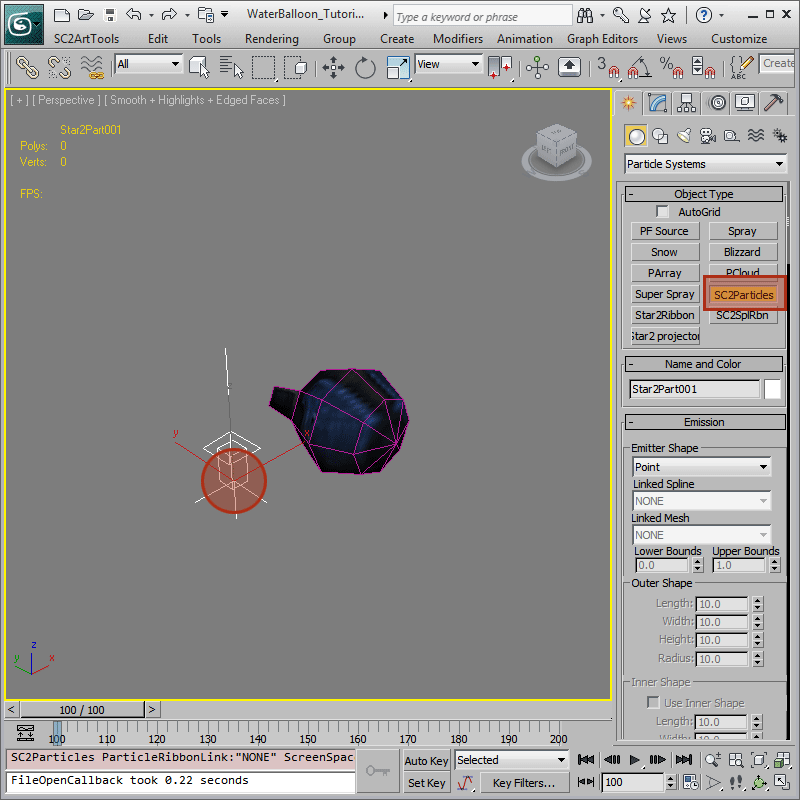
Particle Materials
-
To get the particles to show up in engine, they will need a material, just like anything else. The Material Tutorial has detailed information, if required. Particle Systems require very special, fast materials. To get started, create a new 'SC2 Standard' Material. To configure this one to be simple and cheap, first, set 'Mask' as the material configuration, then choose 'Blend' as the blend mode. This will allow you to specify a texture to smoothly blend the particle into the image. The rest of the settings help make the particles render faster. Disable 'Hit Test' to exclude the particles from mouse selection calculations, and then disable 'Receive Shadows' and 'Cast Shadows' so that the particles do not have to do costly shadow calculations. Enable 'Unlit' to opt out of costly lighting calculations as well.
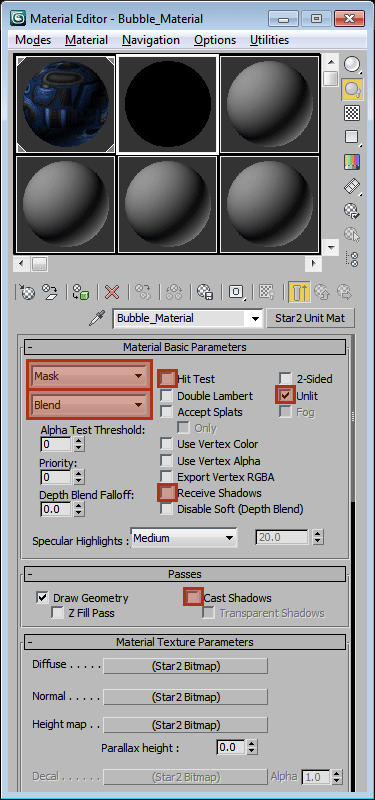 -
Begin editing the texture for the 'Diffuse' layer. Click 'SC2 Bitmap' to change the source of the color. In the list select 'Maps > Standard > SC2 Color'. then hit 'OK'.
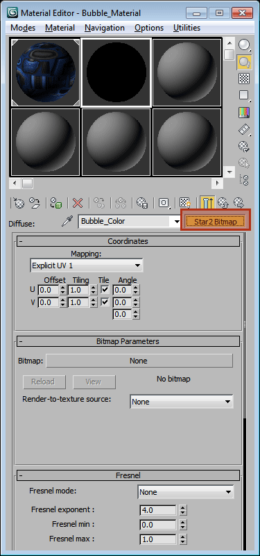 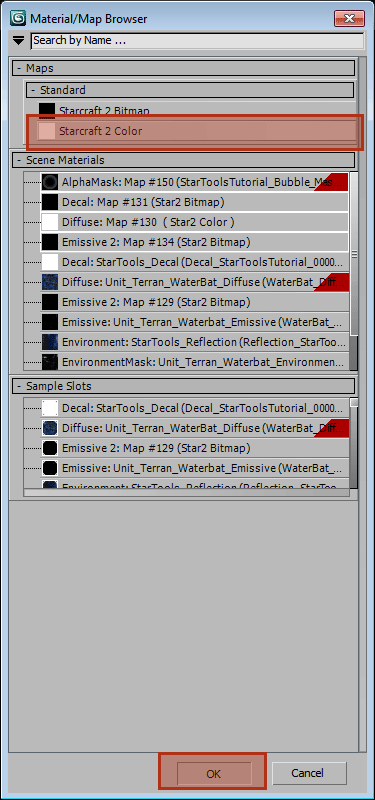 -
A 'SC2 Color' defines a solid color that can be used for a layer in a material. For the diffuse layer, 'Alpha' is used to define how much of the team color bleeds through. Set the spinner to the right of the color swatch to '100' so the bubbles have some team color. Also, for the 'Alpha Mask' layer, choose 'StarToolsTutorial_Bubble_Mask.tga' and set the 'Channel Mask'to 'Use R'. This will make each individual particle show up like a single bubble.
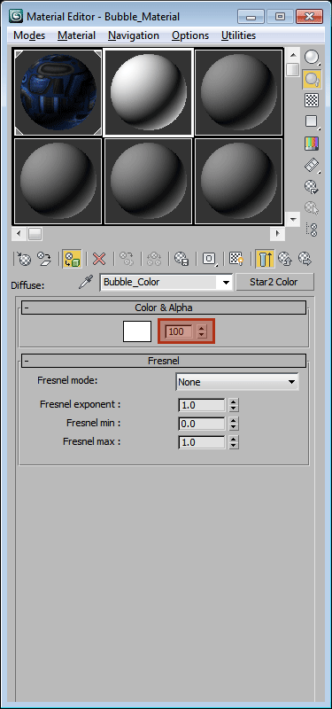 -
Going to 'SC2ArtTools > Export > Preview' will launch the Cutscene Editor and immediately load the model. The particles should now be showing up, shooting up in a very plain straight line.
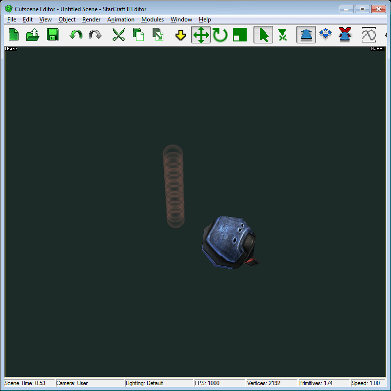
Particle Emission
-
To add some spice to the particles, the 'Emitter Shape' can be changed. Select the particle system and go to the 'Modify Panel'. In the 'Emission > Emitter Shape' dropdown, choose 'Cylinder', which will provide some variance.
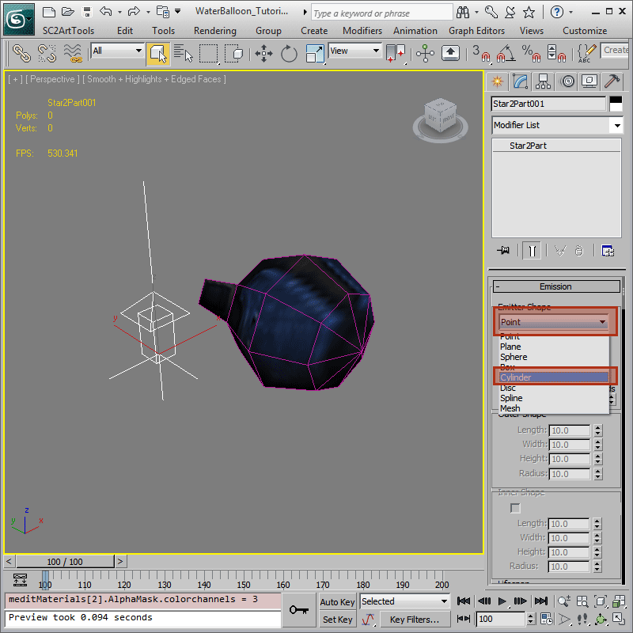 -
To increase the rate at which the particles appear, raise 'Emission > Lifespan > Emission Rate'to '40.0'. To keep the total number of particles reasonable, and to be visually appropriate for bubbles, set 'Emission > Lifespan > Lifetime' to '.35'.
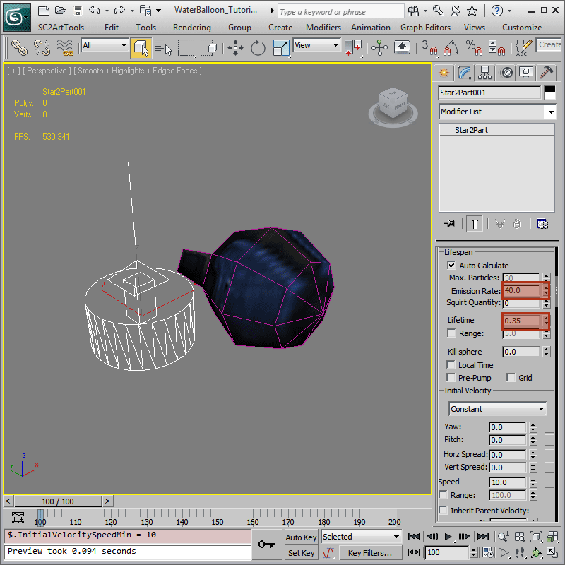 -
'Preview' the model again, and the bubbles should be quickly appearing in a roughly cylindrical cluster. They still snap in and out of existence instantly, which look less than ideal.
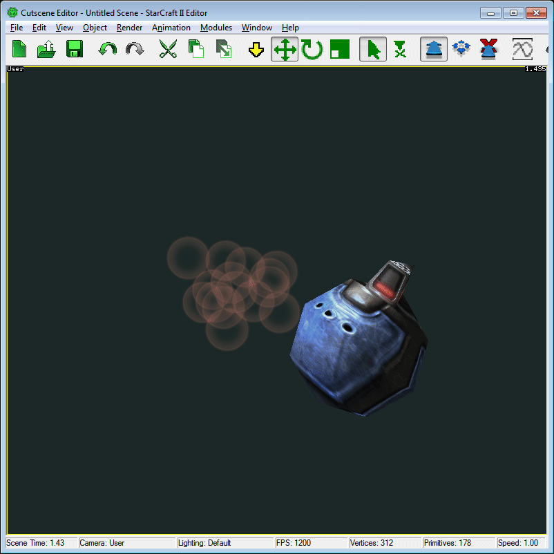
Particle Appearance
-
To change how the particles fade in and out go to the 'Per-particle Parameters' rollout, and click the button titled 'Mid' in the 'Alpha' group. The number to the left is the opacity (out of 255) at the instant the particle is created. The number at the end denotes the opacity at the end of the particle lifetime, while the middle number is the target opacity at the fraction of the particle lifetime defined in the 'Mid Time' spinner. Set the beginning and end values to '0' to make the particle fade in and out completely.
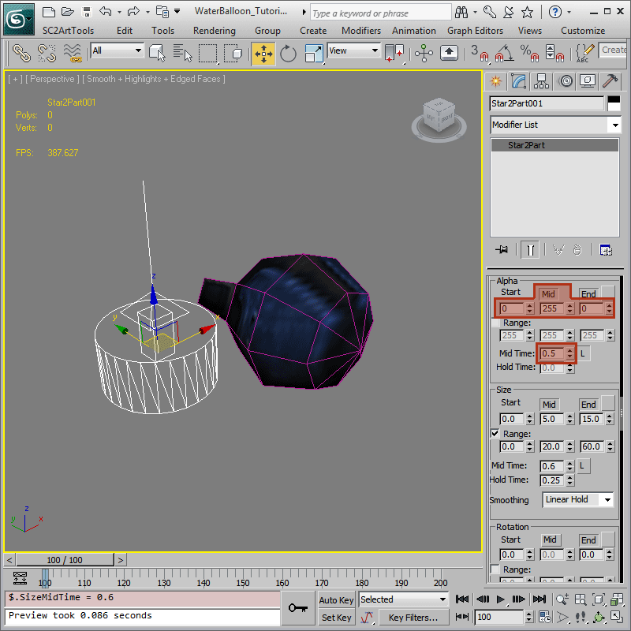 -
A quick 'Preview' now should show that the particles fade in and out, which is hopefully more pleasing to look at. The particles could, however, use a bit more variance.
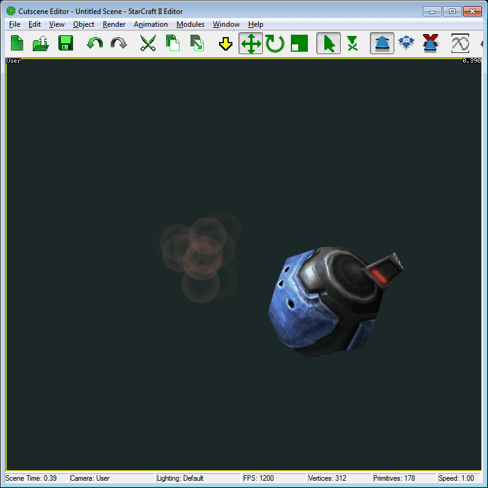 -
Size variation is a good way to add visual interest to a particle system. In the 'Size' group, enable the 'Mid' key like with Alpha. This time, also enable the 'Range' checkbox. This will enable the lower row of numbers, and will cause particles to be randomized between the values. The top row defines the lower bound for values. Set them to '0.0, 5.0, 15.0'. For the upper bound, set '0.0, 20.0, 60.0'. This will hopefully make the bubbles look like they grow into existence, then pop at the end of their life. Artistically, for the bubble, it would be good to stay at bubble size for awhile, then make the pop happen very suddenly. To do this, set the 'Smoothing' dropdown to 'Linear Hold'. Set the newly enabled 'Hold Time' to '.25' to make the particles stay at the value defined for 'Mid' for a larger fraction of the particle life. Finally, Click the 'Shared' to the right of the 'Mid Time' slider to decouple the time for the 'Mid' key for Size from the time for 'Mid' keys for other properties. Then set 'Mid Time' to '.6' to allow the bubble more time to grow in than to pop out.
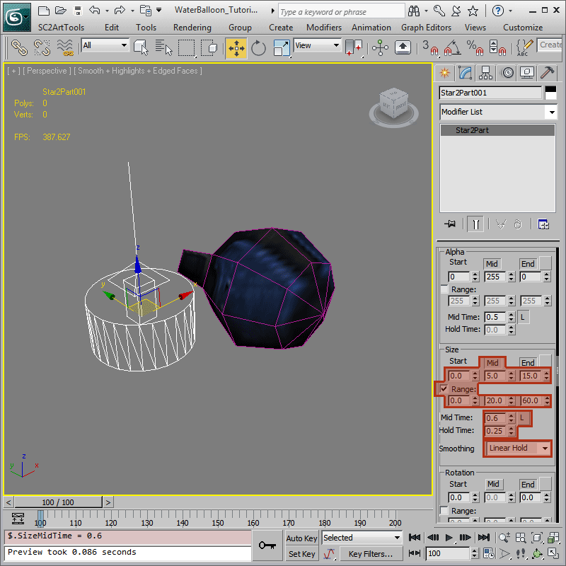 -
The bubbles should now be quite a lot more lively. Over their lifetime, they should scale up into existence, sit around for awhile, and then burst away, and each particle should be slightly different from all the others. This should be looking good for now, but you are welcome to play around with other settings, such as 'Color' to add extra variation or further refine the look.
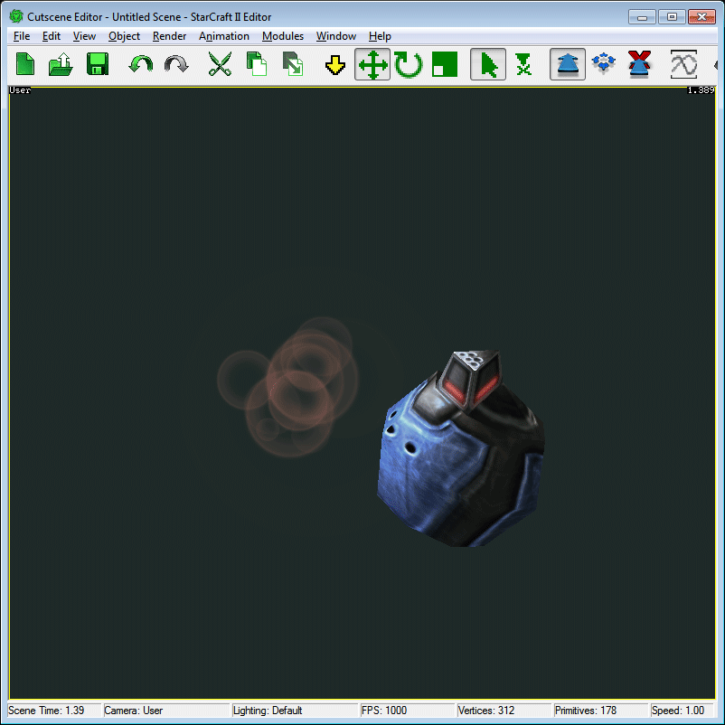 -
In the 'Physics' rollout, set 'Gravity' to '-500.0' and disable 'Multiply by map gravity'. This will cause all the particles to accelerate upwards. Map gravity is disabled, because higher gravity would make the bubbles move up faster, which would be an odd effect.
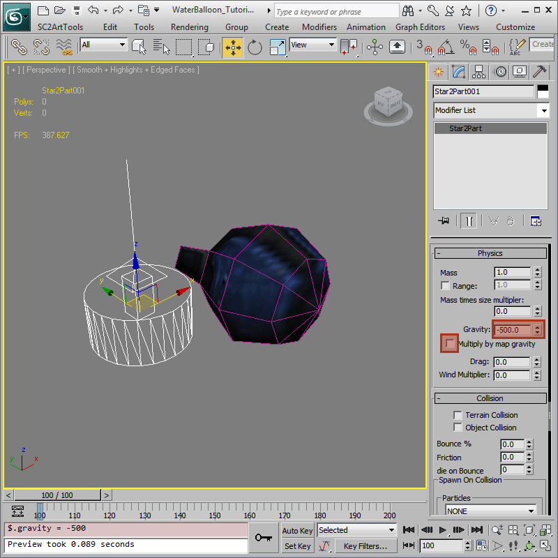 -
The bubbles should now be roiling upwards until they eventually burst. The Bubble Particle system is pretty much done at the point. All that needs to be done is to attach it to the projectile.
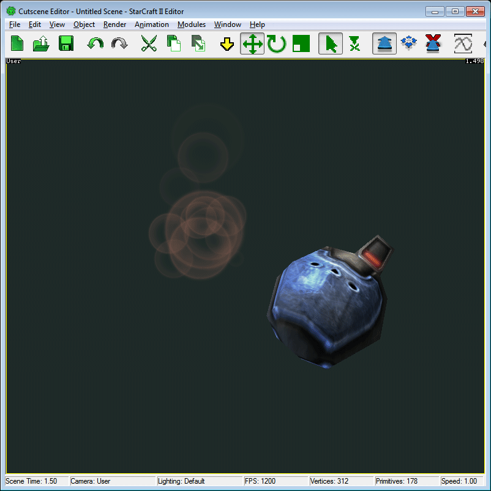 -
Line up the particle system with the stem on the WaterBalloon. Then use the 'Link' tool. With the tool active, click the particle system, and drag onto the mesh, then let go. This will constrain the particle system to the animated mesh.
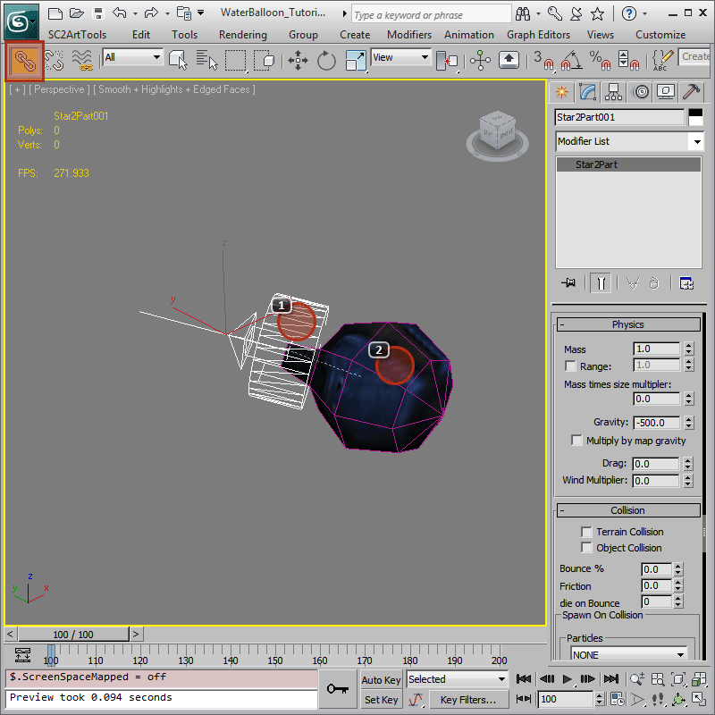 -
Another 'Preview' will reveal that the particles now spawn off the stem as it tumbles around. The spawning of the particles should be scattered and look a lot more like a trail.
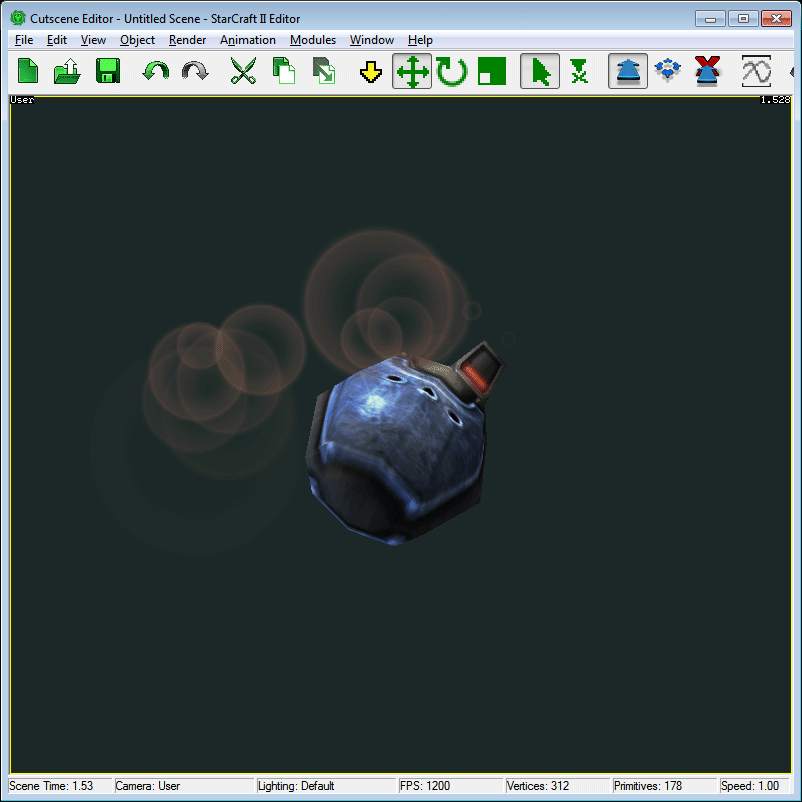
Ribbon Setup
-
To get a more solid trail, however, we'll want to use a Ribbon. A 'SC2Ribbon' is placed just like a particle system. Click the button, and then drop it. Ribbons are like particle systems, in that they are comprised of lots of small simulating pieces. Ribbons differ in that they have a reduced set of options and display as a single strip, useful for cases like tails.
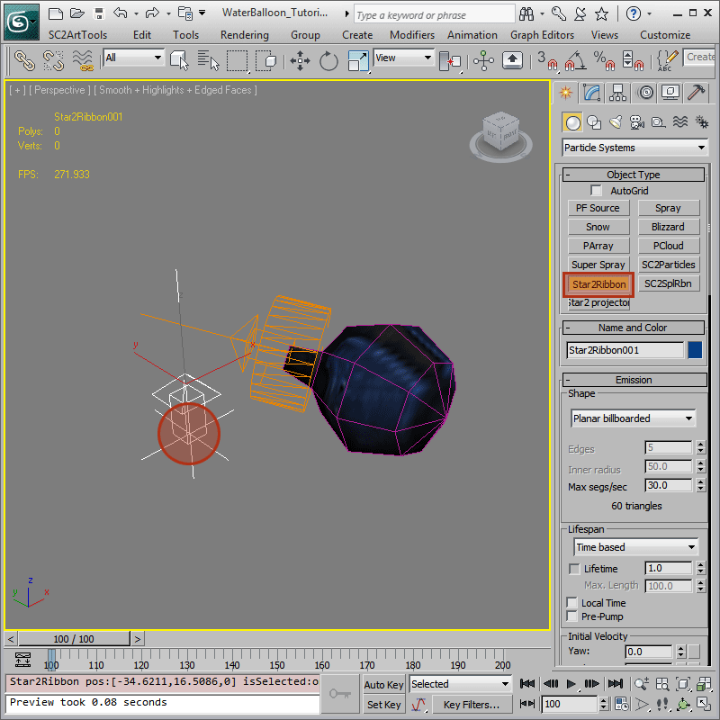 -
Verify that the 'Active' checkbox is enabled. If 'Active' is not enabled, your ribbon may never show up.
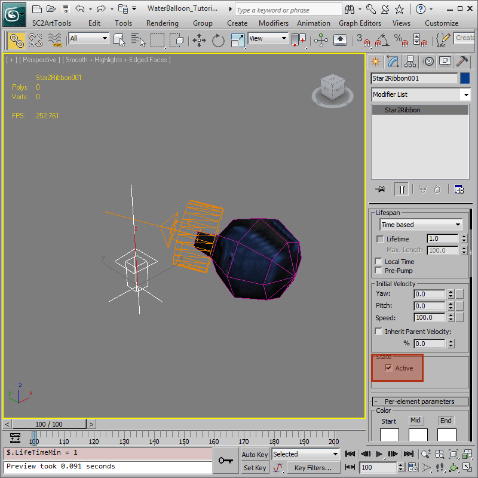 -
Setup another 'SC2 Standard' Material for the tail just like the bubble material in Step 4, but this time using the 'Add' blend mode. For the 'Alpha Mask' texture, this time you will want to choose 'StarToolsTutorial_Tail_Diff' and set the 'Channel Mask'to 'Use R'.
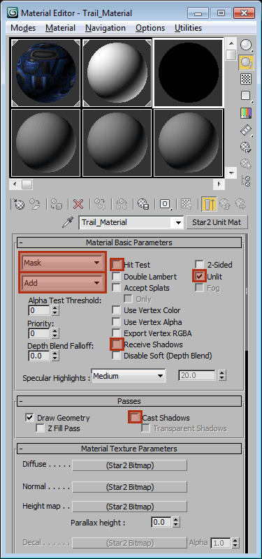 -
The tail should be a relatively simple rising band. If you move around the model in the viewport, the tail will follow around, and you can observe the behavior of ribbons.
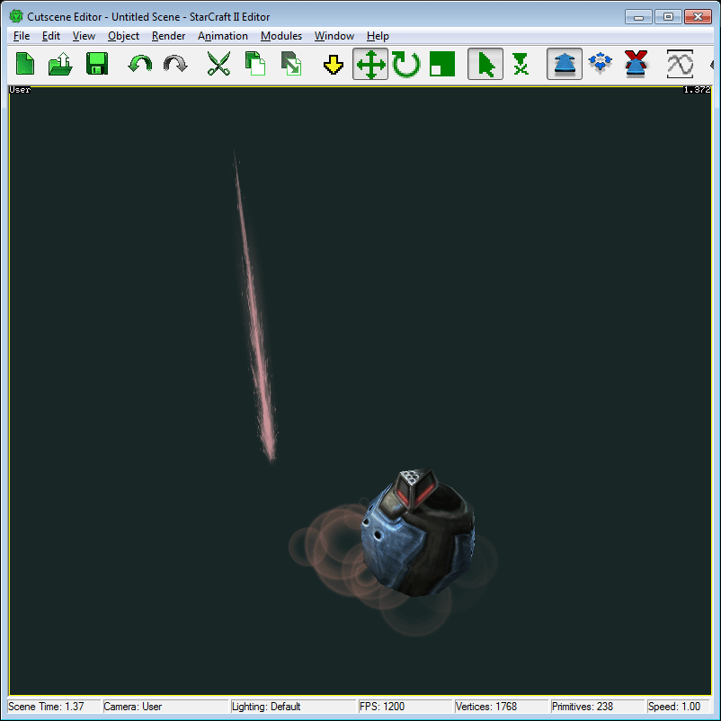
Ribbon Appearance
-
The tail should fade out smoothly over time, so set 'Per-particle parameters > Alpha > Start' to '192' and 'End' to '0'. Over the life of the trail, it might be nice for it bulge out, then taper off. Enable the 'Mid' key for 'Size'm then set the values to '25.0, 50.0, 10.0'. To bias the bulge earlier in the ribbon, set 'Mid Time' to '.2'.
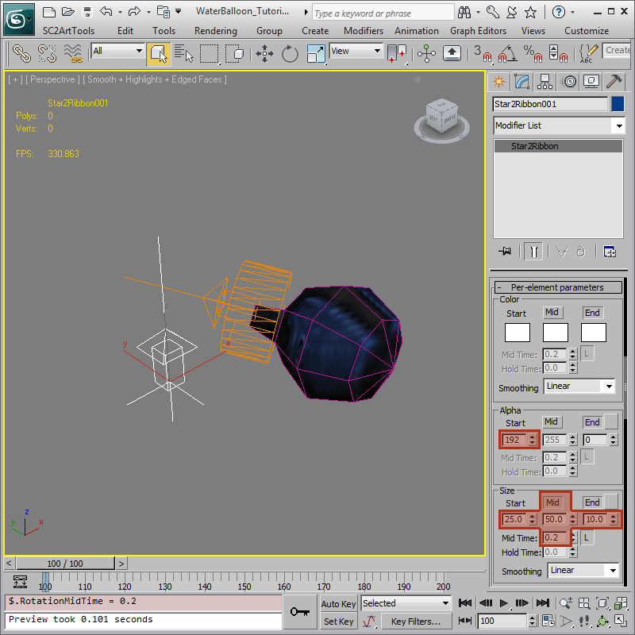 -
The ribbon, should now have a far more pleasing shape, and look a lot more like something blasting out the back of a quickly moving mortar round.
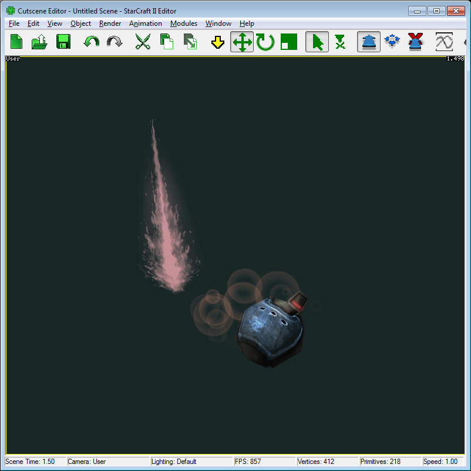 -
Align the Ribbon in the same fashion as the Particle System in Step 17. Because there can be potentially many Waterbats firing at once, and the effect is relatively minor, set 'Max segs/sec' to '20' to make the ribbon slightly cheaper. Because the ribbon is going to derive most of its size from the movement of the projectile, reduce 'Emission > Initial Velocity > Speed' to '20.0'. Finally, because the projectile has a relatively brief life, set 'Emission > Lifespan > Lifetime' to '.25'.
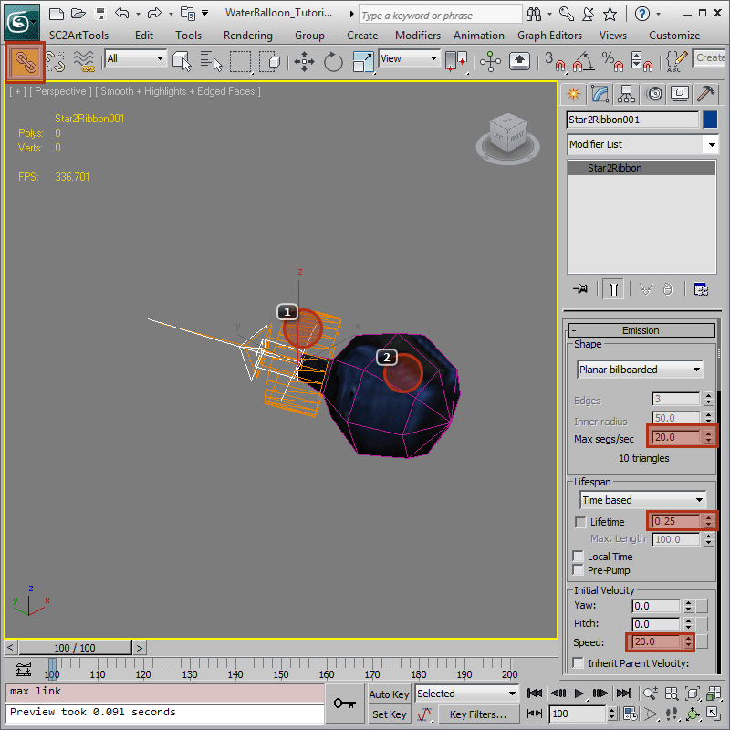 -
The ribbon should now be shooting out of the stem with the bubbles. As the ball twists, the ribbon should trace where the stem has been. The water-based mortar round is ready to fly out of the Waterbat's weapons and towards any unsuspecting foe, and repair allied buildings.
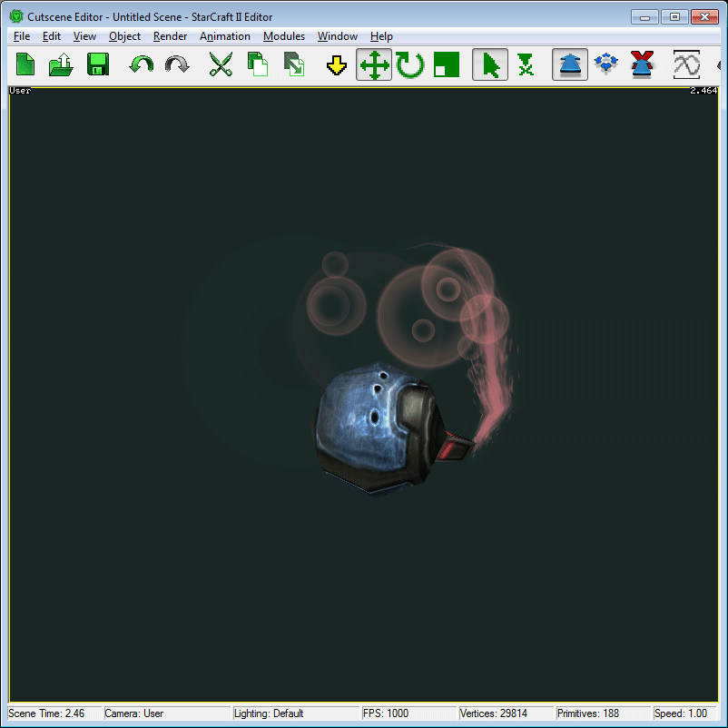